【暴風の杖】
はじめに
以前実装した▶風の杖は、ウインドチャージをそのままカスタムエンティティ化しただけでしたが、今回は破壊力を上げてブロックも壊せるものにしてみました。
前回と同じように重力はかかりますので、発射した方向によって延々と空中を彷徨うような事もありません。
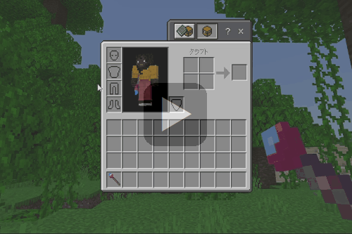
「風の杖」のページでご紹介した補充アイテム要らずの無限撃ちを実装しているので、サバイバルモードでも弾切れの心配はありません。
前回と同じように重力はかかりますので、発射した方向によって延々と空中を彷徨うような事もありません。
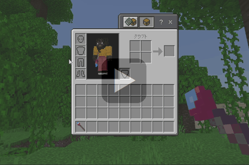
「風の杖」のページでご紹介した補充アイテム要らずの無限撃ちを実装しているので、サバイバルモードでも弾切れの心配はありません。
サイズ切替
今回はWebsocketサーバーと連携する事で、▶スウィープロッドを実装した時に使っていた「ダッシュ＋スニーク」を実行して、ウインドチャージのサイズ切替を可能にしています。
▼通常サイズ⇒特大サイズ

▼特大サイズ⇒通常サイズ
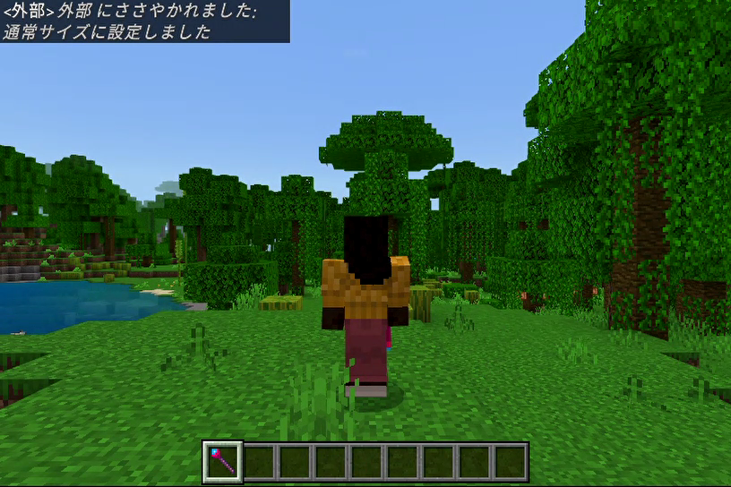
▼通常サイズ
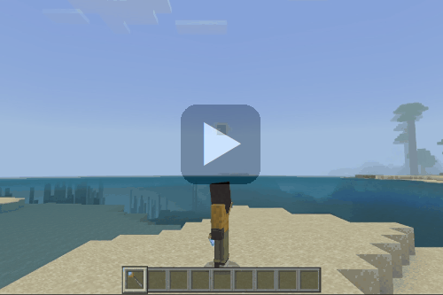
▼特大サイズ
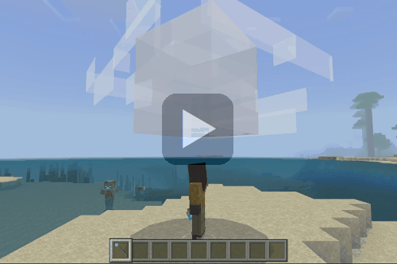
特大サイズは通常サイズの１０倍の大きさと威力があります。
切替時のメッセージ
サイズ切替を行うとウィスパーを通して以下のように天の声が流れてきます。▼通常サイズ⇒特大サイズ
▼特大サイズ⇒通常サイズ
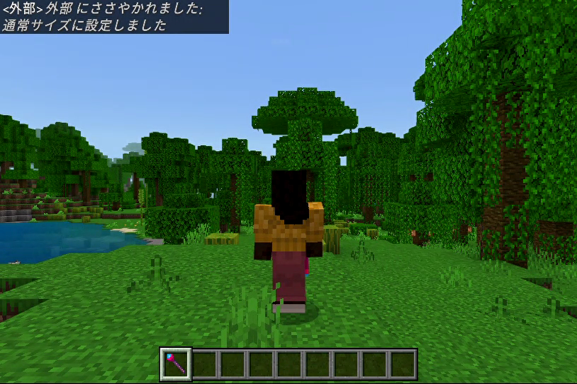
サイズの比較
頭上に召喚してみた時のサイズを比較してみました。▼通常サイズ
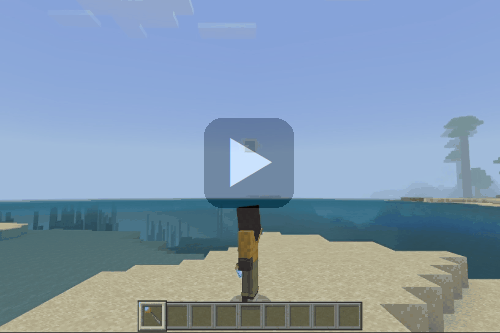
▼特大サイズ
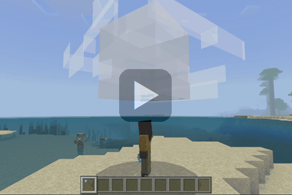
特大サイズは通常サイズの１０倍の大きさと威力があります。
特大サイズの発射
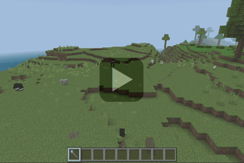
特大サイズの場合は、着弾時に雷鳴を轟かせながら巨大なクレーターを形成し、その威力は▶はかいの矢で威力を集中させた▶機雷の弓を凌駕します。
▼着弾後の惨状
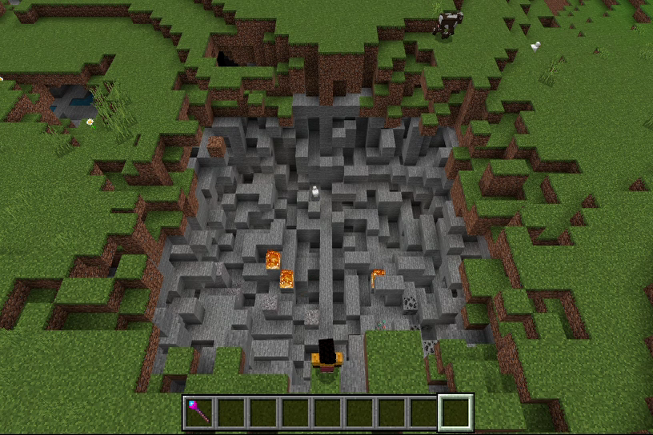
黒曜石も簡単に破壊してしまうので、近くに誤射してしまうとひとたまりもありません。
この為、▶はかいのつるぎの場合と同様に発射後数秒間は無敵状態にしています。
ウインドチャージの爆撃は水中でも有効なので、以下のように水性生物も巻き込んで海底をえぐりながら爆発を起こします。
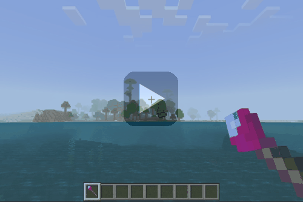
爆発に巻き込まれた大量の魚や海藻類は、爆心地を中心として円状に広がる形で水面に浮かんできます。
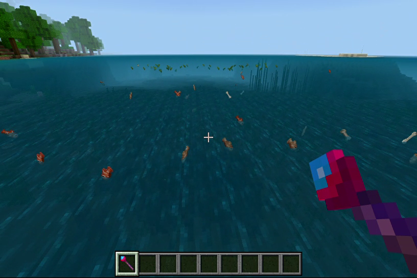
以下は海底を破壊する様子。
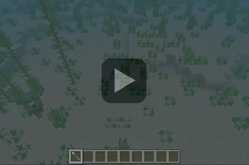
特大サイズの場合は、着弾時に雷鳴を轟かせながら巨大なクレーターを形成し、その威力は▶はかいの矢で威力を集中させた▶機雷の弓を凌駕します。
▼着弾後の惨状
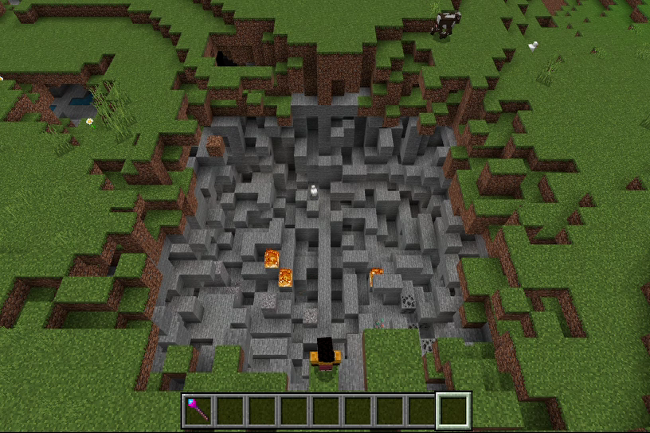
黒曜石も簡単に破壊してしまうので、近くに誤射してしまうとひとたまりもありません。
この為、▶はかいのつるぎの場合と同様に発射後数秒間は無敵状態にしています。
ウインドチャージの爆撃は水中でも有効なので、以下のように水性生物も巻き込んで海底をえぐりながら爆発を起こします。
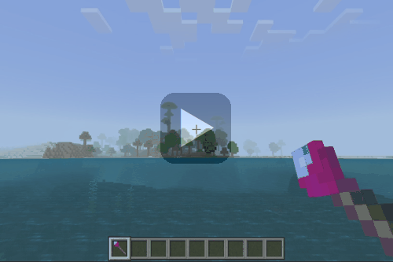
爆発に巻き込まれた大量の魚や海藻類は、爆心地を中心として円状に広がる形で水面に浮かんできます。
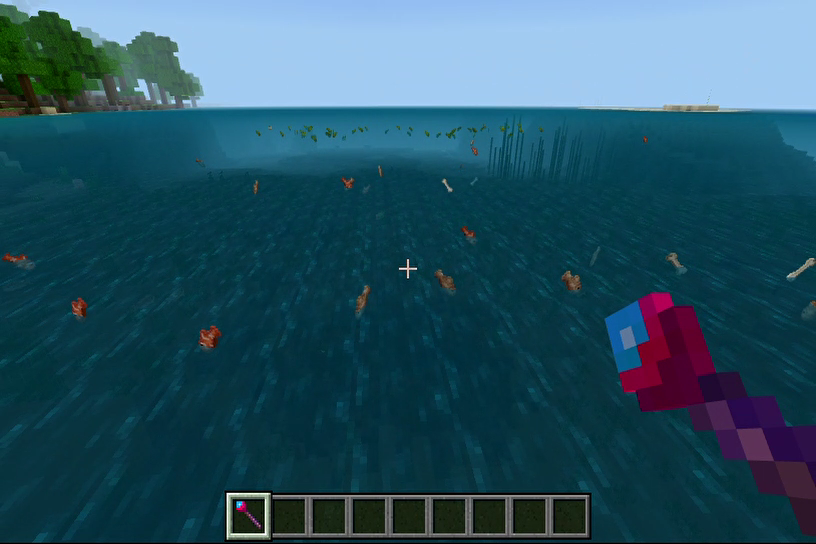
以下は海底を破壊する様子。
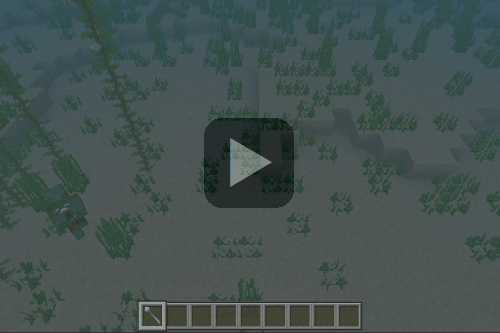
「暴風の杖」の取得
本環境のビヘイビアパック／リソースパックを含めたアドオンパックを適用しておけば、以下の方法で「暴風の杖」が手に入ります。
▼レシピパターン
▶ネットショップ
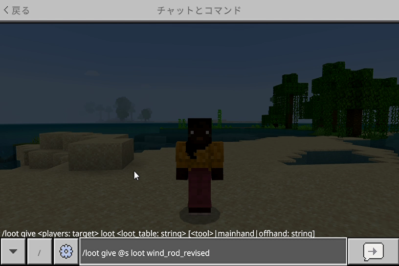
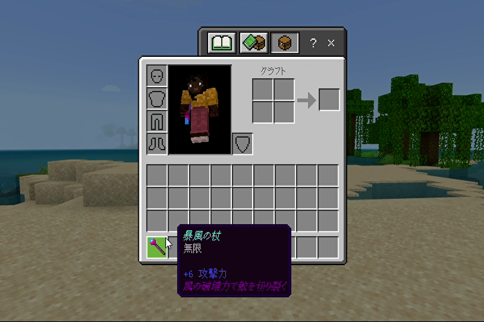
クラフトする場合
▼必要な素材▼レシピパターン
ショップで購入する場合
以下のショップで購入できます。▶ネットショップ
コマンドで取得する場合
以下はワールドオーナーやシステム組み込み用としてコマンドで取得する方法です。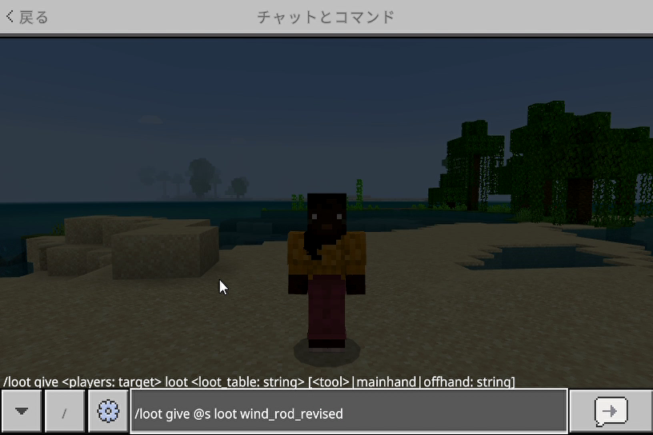
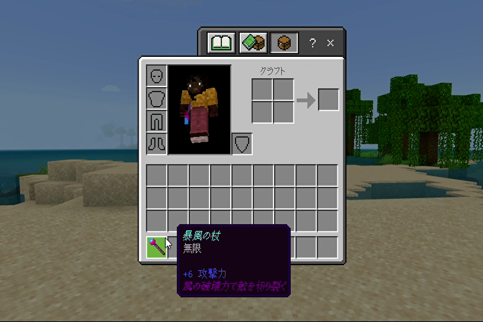
おわりに
▶召雷の魔石実装時と同じようにWebsocketサーバーを介したネットショップとの接続中は発射できないようにしています。
また、「ダッシュ＋スニーク」によるウインドチャージサイズの切替もサーバー側で行っていますが、いずれも▶エンティティプロパティを使ってスイッチングを行っています。
今回のアイテムの実装は▶発射アイテムの作り方を基に応用したものです。
発射体エンティティの作り方については▶発射体エンティティのページをご覧ください。
また、「ダッシュ＋スニーク」によるウインドチャージサイズの切替もサーバー側で行っていますが、いずれも▶エンティティプロパティを使ってスイッチングを行っています。
今回のアイテムの実装は▶発射アイテムの作り方を基に応用したものです。
発射体エンティティの作り方については▶発射体エンティティのページをご覧ください。